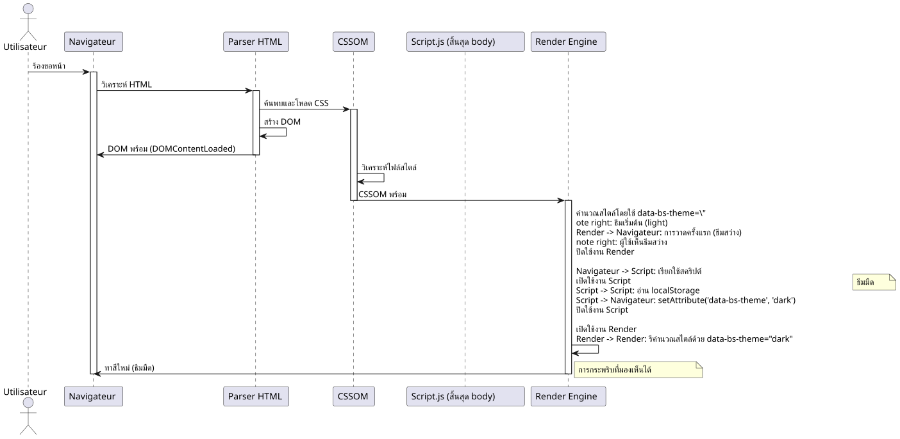

ศิลปะของการโหลดล่วงหน้า: กำจัด "แฟลช" ของธีมด้วย JavaScript และ CSS
เผยแพร่เมื่อ 15 November 2025
สรุป
ในบทความทางเทคนิคเชิงลึกนี้ เราจะสำรวจวิธีการนำใช้ตัวเลือกธีม (light/dark) โดยไม่มีผลกระทบการกระพริบที่ไม่น่าพึงพอใจซึ่งเกิดขึ้นเมื่อหน้าเว็บโหลด เราวิเคราะห์โดยละเอียดถึงวงจรการเรนเดอร์ของเบราว์เซอร์ สาเหตุที่แท้จริงของ FOUC (Flash of Unstyled Content) และเสนอแนะทางแก้ปัญหาที่แข็งแกร่งโดยอิงจากการโหลดล่วงหน้าแบบซิงโครนัสภายใน`<head>`เทคนิคนี้รับประกันให้ได้ประสบการณ์ผู้ใช้ที่ราบรื่นและเป็นมืออาชีพ.
ปัญหา: การกระพริบของธีมที่ถูกสาป
ฝันร้ายสำหรับประสบการณ์ผู้ใช้
จินตนาการถึงฉากนี้: คุณใช้เวลาหลายชั่วโมงในการออกแบบธีมสีดำที่สวยงามสำหรับแอปพลิเคชันบนเว็บของคุณ สีมีความสมดุลอย่างลงตัว คอนทราสต์ดีเยี่ยม และผู้ใช้ของคุณก็ชื่นชอบตัวเลือกนี้ แต่มีปัญหาที่น่าอับอายอยู่: เมื่อหน้าโหลดใหม่ทุกครั้ง จะมีเสี้ยววินาทีที่ธีมสว่างเริ่มต้นแสดงขึ้นก่อนที่ธีมสีดำจะเข้ามาแทนที่
Flash" ทางสายตา แม้จะสั้น (บางครั้งน้อยกว่า 100 มิลลิวินาที) แต่ถูกตรวจพบได้ทันทีโดยดวงตามนุษย์และทำให้เกิดประสบการณ์ที่ไม่น่าพอใจ สำหรับผู้ใช้ที่เลือกธีมมืดด้วยเหตุผลเรื่องความสบายทางสายตาหรือการเข้าถึง ความกระพริบนี้อาจทำให้เจ็บปวดได้ โดยเฉพาะในสภาพแวดล้อมที่มีแสงน้อย
FOUC : ปัญหาเว็บเก่า
ปรากฏการณ์นี้เป็นรูปแบบหนึ่งของสิ่งที่เรียกว่า "Flash of Unstyled Content" (FOUC) ซึ่งเป็นปัญหาคลาสสิกในการพัฒนาเว็บที่ย้อนกลับไปตั้งแต่ยุคเริ่มต้นของ CSS ปรากฏการณ์ FOUC เกิดขึ้นเมื่อเบราว์เซอร์แสดงเนื้อหา HTML ชั่วคราวโดยไม่มีการใช้สไตล์ CSS ทำให้เกิดแฟลชของเนื้อหาที่ไม่ได้จัดสไตล์
ในกรณีเฉพาะของเรา เราไม่ได้พูดถึงเนื้อหาที่ไม่มีการจัดสไตล์อย่างสมบูรณ์ แต่เป็นไฟแลบของธีมที่ผิด(FOWT) - เนื้อหาถูกจัดรูปแบบ แต่ใช้ธีมผิด นี่ทำให้รู้สึกหงุดหงิดเป็นพิเศษ เพราะแสดงว่าแอปพลิเคชันของเรา 'ลืม' การตั้งค่าของผู้ใช้ทุกครั้งที่โหลดหน้า
ผลกระทบต่อการรับรู้คุณภาพ
ปัญหานี้ แม้จะเป็นทางเทคนิค ก็ส่งผลกระทบอย่างมีนัยต่อการรับรู้ถึงคุณภาพของแอปพลิเคชันของคุณ :
ขาดความประณีตการกระพริบทำให้ดูเหมือนเป็นแอปพลิเคชันที่ยังไม่เสร็จสมบูรณ์หรือได้รับการปรับปรุงไม่ดี ผู้ใช้มักเชื่อมโยงข้อบกพร่องเล็กๆ ทางสายตาเหล่านี้กับความขาดความเป็นมืออาชีพโดยทั่วไป
การสูญเสียความสอดคล้องแอปพลิเคชันดูเหมือนจะ “ลืม” การตั้งค่าของผู้ใช้ สร้างความรู้สึกว่าไม่ซิงโครไนซ์ระหว่างส่วนต่อประสานกับความคาดหวัง
ความเหนื่อยล้าทางสายตาสำหรับผู้ใช้ที่ไวต่อแสงหรือประสบกับไมเกรน แสงกระพริบที่สว่างนี้อาจเป็นมากกว่าความไม่สะดวกด้านสุนทรียภาพเพียงอย่างเดียว
ประสิทธิภาพที่รับรู้อย่างไรก็ตาม หากเว็บไซต์ของคุณโหลดได้เร็ว แต่การกระพริบนี้ก็อาจทำให้ดูเหมือนว่าเป็นแอปพลิเคชันที่ช้าหรือไม่ตอบสนอง
การวิเคราะห์ทางเทคนิคของปัญหา
เพื่อทำความเข้าใจว่าจะแก้ปัญหานี้ได้อย่างไร เราต้องก่อนอื่นเข้าใจว่าทำไมมันถึงเกิดขึ้น การกระพริบเกิดจากการที่มีการเบี่ยงเบนเวลาระหว่างเหตุการณ์สำคัญสามเหตุการณ์ในวงจรชีวิตของหน้าเว็บ :
-
การวิเคราะห์เริ่มต้นของ HTML: เบราว์เซอร์อ่านและวิเคราะห์โครงสร้างของหน้าเว็บของคุณ
-
การใช้งานสไตล์ CSSเบราว์เซอร์ใช้กฎ CSS และคำนวณการแสดงผลภาพ.
-
การทำงานของ JavaScriptโค้ดของคุณที่เปลี่ยนธีมกำลังทำงาน
ปัญหาเกิดขึ้นเมื่อเหตุการณ์หมายเลข 3 (การดำเนินการของ JavaScript) มาหลังจากที่เบราว์เซอร์ได้เริ่มต้นหรือเสร็จสิ้นแล้ว เหตุการณ์หมายเลข 2 (การใช้สไตล์) ณ ขณะนั้น เบราว์เซอร์ได้ตัดสินใจแล้วว่าจะแสดงธีมใด และโค้ดของคุณมาช้าเกินไปที่จะมีอิทธิพลต่อก่อนการเรนเดอร์ครั้งแรก
ทำไมสคริปต์คลาสสิกไม่เพียงพอ?
วิธีการเชิงสัญชาตญาณแต่ไร้ประสิทธิภาพ
วิธีการที่เป็นธรรมชาติสำหรับนักพัฒนาจะเป็นการวางสคริปต์ไว้ที่ส่วนท้ายของเรา`<body>`ซึ่งตรวจสอบธีมที่ผู้ใช้ชอบและนำไปใช้. แนวทางนี้ปฏิบัติตามหลักปฏิบัติที่ดีที่สุดแบบดั้งเดิมของเว็บที่แนะนำให้โหลดสคริปต์ท้ายหน้าเพื่อไม่ให้บล็อกการแสดงผล
// À la fin de <body> - L'APPROCHE INSUFFISANTE
document.addEventListener('DOMContentLoaded', () => {
const theme = localStorage.getItem('preferred-theme');
if (theme === 'dark') {
document.documentElement.setAttribute('data-bs-theme', 'dark');
}
});วิธีนี้ดูเหมือนเป็นเหตุผลที่แรกเห็น เรารอจนกว่า DOM จะพร้อม แล้วจึงใช้ธีม ง่ายๆ ใช่ไหม? น่าเสียดาย ความเรียบง่ายนี้ซ่อนข้อบกพร่องพื้นฐานที่เกี่ยวข้องกับเวลาในวงจรการแสดงผลของเบราว์เซอร์
ทำความเข้าใจเหตุการณ์ DOMContentLoaded
เหตุการณ์`DOMContentLoaded`จะทริกเกอร์เมื่อเอกสาร HTML เริ่มต้นได้ถูกโหลดและแยกวิเคราะห์อย่างสมบูรณ์โดยเบราว์เซอร์,โดยไม่รอการเสร็จสิ้นของการโหลดใบสไตล์ รูปภาพ และเฟรมย่อย. นี่เป็นจุดสำคัญที่ต้องทำความเข้าใจ.
ต่อไปนี้คือลำดับเหตุการณ์ทั่วไป：
-
เบราว์เซอร์เริ่มดาวน์โหลด HTML
-
มันวิเคราะห์ HTML ขณะที่กำลังรับ
-
เขาค้นพบแท็ก`<link>`สำหรับ CSS และเริ่มดาวน์โหลดพวกมัน
-
เขาค้นพบแท็ก`<script>`และดำเนินการกับมัน ( ตามประเภทและแอตทริบิวต์ของมัน)
-
เขาสร้าง DOM (โมเดลวัตถุเอกสาร)
-
เหตุการณ์
DOMContentLoadedถูกทริกเกอร์ -
เขายังคงใช้สไตล์และทำการจัดวางเลย์เอาต์
-
การแสดงผลครั้งแรก (การแสดง) เกิดขึ้น
-
เหตุการณ์`load`จะเกิดขึ้นเมื่อทรัพยากรทั้งหมดได้ถูกโหลดแล้ว
ปัญหา? ระหว่างขั้นตอนที่ 6 (DOMContentLoaded) และขั้นตอนที่ 8 (premier paint) เบราว์เซอร์ได้ตัดสินใจแล้วว่าจะแสดงหน้าเป็นอย่างไร หากสคริปต์เปลี่ยนธีมของคุณทำงานในขั้นตอนที่ 6 มันก็สายเกินไปที่จะหลีกเลี่ยงการแสดงผลครั้งแรกโดยใช้สไตล์เริ่มต้น
ปัญหาการบล็อกการเรนเดอร์
ในความเป็นจริง เวลา (timing) ยังซับซ้อนมากขึ้นไปอีก เบราว์เซอร์สมัยใหม่ใช้เทคนิคการเพิ่มประสิทธิภาพขั้นสูงเพื่อปรับปรุงประสิทธิภาพที่รับรู้ได้ พวกเขาพยายามทำ first paint (First Contentful Paint) ให้เร็วที่สุดเท่าที่จะทำได้ เพื่อให้ผู้ใช้เห็นบางอย่างบนหน้าจอ
CSS เป็น "render-blocking" ตามค่าเริ่มต้น ซึ่งหมายความว่าเบราว์เซอร์จะรอให้ดาวน์โหลดและแยกวิเคราะห์ไฟล์สไตล์ชีทก่อนที่จะทำการวาดครั้งแรก นี่เป็นเรื่องสมเหตุสมผลเพราะเราไม่ต้องการแสดงเนื้อหาที่ไม่ได้ถูกจัดรูปแบบ
และนี่คือกับดัก: เมื่อเบราว์เซอร์นำ CSS สไตล์เหล่านี้มาทำการใช้งานครั้งแรก มันทำเช่นนั้นโดยยึดตามสถานะปัจจุบันของ DOM`data-bs-theme`ยังไม่ได้กำหนดบนแท็ก`<html>`, เบราว์เซอร์จะใช้สไตล์เริ่มต้น (โดยปกติคือธีมสว่าง).
ต่อมา เมื่อสคริปต์ของคุณทำงานและเปลี่ยนแอตทริบิวต์นี้ เบราว์เซอร์ต้อง :
-
คำนวณใหม่ทุกสไตล์ที่ได้รับผลกระทบจากการเปลี่ยนแปลงนี้
-
ทำ Layout ใหม่ถ้าจำเป็น
-
ทาสีซ้ำองค์ประกอบที่ได้รับผลกระทบ
กระบวนการคำนวณใหม่และการทาสีใหม่เป็นสาเหตุของการกระพริบที่เห็นได้ชัด
การแสดงภาพปัญหา
เพื่อให้เข้าใจลำดับที่เป็นปัญหานี้ดีขึ้น ลองพิจารณาแผนภาพลำดับโดยละเอียด:

แผนภาพนี้แสดงให้เห็นปัญหาอย่างชัดเจน :การวาดครั้งแรกเกิดขึ้นก่อนที่สคริปต์ของเราจะมีโอกาสตั้งธีมที่ถูกต้อง การวาดซ้ำต่อมาทำให้เกิดการกระพริบที่มองเห็นได้
ความพยายามในการแก้ปัญหาที่ไม่ได้ผล
มีหลายวิธีที่ถูกพยายามใช้เพื่อแก้ปัญหานี้ แต่ส่วนใหญ่ก็มีข้อเสียของตัวเอง:
วิธีที่ 1 : ซ่อนเนื้อหาจนกว่าจะโหลดเสร็จ
body {
opacity: 0;
transition: opacity 0.3s;
}
body.loaded {
opacity: 1;
}วิธีการนี้ซ่อนเนื้อหาทั้งหมดจนกว่า JavaScript จะกำหนดธีมที่ถูกต้องได้ ปัญหาคือ การทำให้แสดงผลล่าช้าอย่างเทียมเป็นภาพลวงว่าการโหลดเว็บไซต์ช้า นอกจากนี้ หากปิดใช้งาน JavaScript ผู้ใช้จะไม่เห็นอะไรเลย!
วิธีที่ 2: ใช้ loader/spinner
เหมือนกับวิธีการที่ 1 แต่มีสปินเนอร์การโหลด สิ่งนี้ซ่อนปัญหาไว้ แต่ไม่ได้ทำให้ประสิทธิภาพจริงดีขึ้นและเพิ่มความล่าช้าที่รับรู้ได้โดยไม่จำเป็น
วิธีที่ 3: ค่าเริ่มต้นเป็นธีมมืด
บางนักพัฒนาตั้งธีมมืดเป็นค่าเริ่มต้นใน CSS นี้ทำให้ไม่มีการกระพริบสำหรับผู้ใช้ธีมมืด แต่สร้างปัญหาในทางตรงกันข้ามสำหรับผู้ใช้ธีมสว่าง!
ไม่มีวิธีใดในวิธีเหล่านี้ที่น่าพึงพอใจ เนื่องจากพวกมันจัดการกับอาการแทนที่จะเป็นสาเหตุรากฐานของปัญหา
วิธีแก้ที่แท้จริง: ลงมือทำให้เร็วขึ้น
กุญแจของการแก้ปัญหานี้คือการตระหนักว่าเราต้องกำหนดคุณลักษณะ`data-bs-theme` ก่อนที่เบราว์เซอร์ยังไม่เริ่มใช้สไตล์ CSS นั่นหมายความว่าสคริปต์ของเราต้องทำงานก่อนในวัฏจักรชีวิตของหน้าเว็บ และนี่คือสิ่งที่เราจะสำรวจต่อไปในส่วนถัดไป
คำตอบ : การโหลดล่วงหน้า (Early Loading)
หลักการพื้นฐาน
วิธีแก้ที่สง่างามต่อปัญหากระพริบของเราอาศัยหลักการที่เรียบง่ายแต่ทรงพลัง:ทำการซิงโครไนซ์สถานะของแอปพลิเคชันกับกระบวนการเรนเดอร์ของเบราว์เซอร์. แทนที่จะรอให้หน้าเว็บโหลดเสร็จเพื่อกำหนดธีม, เราต้องตั้งค่ามันระหว่างการโหลด แม้กระทั่งก่อนที่สไตล์ CSS จะถูกนำมาใช้
วิธีการนี้เรียกว่า "Early Loading" หรือ "Synchronous Preloading" ในศัพท์เฉพาะของการพัฒนาเว็บ แนวคิดคือการดำเนินการตรวจจับธีมของเราให้เร็วที่สุดเท่าที่จะทำได้ในวงจรชีวิตหน้าเว็บ อย่างเหมาะสมควรอยู่ในแท็ก`<head>`, แม้กระทั่งก่อนที่เบราว์เซอร์จะเริ่มดาวน์โหลดไฟล์ CSS
ทำไม <head> จึงเป็นตำแหน่งที่ดีที่สุด
Le `<head>`ส่วนของเอกสาร HTML จะถูกประมวลผลโดยเบราว์เซอร์ตามลำดับจากบนลงล่าง แต่ละองค์ประกอบจะได้รับการประมวลผลในลำดับที่ปรากฏ คุณสมบัตินี้เป็นสิ่งสำคัญต่อโซลูชันของเรา
เมื่อเบราว์เซอร์พบกับแท็ก`<script>`在内`<head>`โดยไม่มีคุณสมบัติ`async` ou defer, il :
-
หยุดการแยกวิเคราะห์ HTML
-
ดาวน์โหลดสคริปต์(ถ้าภายนอก) หรือเตียง (ถ้าเป็นแบบอินไลน์)
-
เรียกใช้สคริปต์ทันที
-
ดำเนินการวิเคราะห์ HTML ต่อ
พฤติกรรมนี้ซึ่งมักถือว่าเป็นปัญหาเรื่องประสิทธิภาพ (ดังนั้นคำแนะนำทั่วไปจึงบอกให้วางสคริปต์ไว้ที่ส่วนท้ายของหน้า) กลายเป็นพันธมิตรของเราในกรณีนี้โดยเฉพาะ การวางสคริปต์ตรวจจับธีมของเราไว้ที่ต้นของ`<head>`, เรารับประกันว่ามันจะทำงานก่อนที่เบราว์เซอร์จะพบแท็ก`<link>`จากใบสไตล์ชีทของเรา
สถาปัตยกรรมของโซลูชันในสามชั้น
โซลูชันที่สมบูรณ์ของเราประกอบด้วยสามชั้นที่เชื่อมโยงถึงกัน โดยแต่ละชั้นมีบทบาทเฉพาะเจาะจง :
ชั้นที่ 1 : ความคงทน (localStorage) ชั้นนี้มีหน้าที่ในการบันทึกและดึงคืนตัวเลือกของผู้ใช้ระหว่างเซสชัน
ชั้น 2 : การซิงค์ก่อน (สคริปต์อินไลน์ใน <head>) เลเยอร์นี้ทำการซิงโครไนซ์สถานะของแอปพลิเคชันกับ DOM ก่อนการแสดงผลเริ่มต้น
ชั้นที่ 3 : สไตล์แบบตอบสนอง (CSS พร้อมตัวเลือกแอตทริบิวต์) เลเยอร์นี้กำหนดสไตล์ภาพตามสถานะที่กำหนดโดยเลเยอร์ที่ 2
มาเราลงสำรวจแต่ละชั้นอย่างละเอียดกันเถอะ
ขั้นตอนที่ 1: บันทึกตัวเลือกของผู้ใช้
localStorage : หน่วยความจำที่คงทนของคุณ
Le localStorage`เป็น API Web Storage ที่ทำให้สามารถจัดเก็บคู่ key-value ในเบราว์เซอร์ได้แบบถาวร. ต่างจากคุกกี้ ข้อมูลของ`localStorage:
-
ไม่ได้ถูกส่งไปยังเซิร์ฟเวอร์โดยอัตโนมัติ
-
มีความจุการจัดเก็บที่มากกว่า (โดยทั่วไปคือ 5-10 เมกะไบต์)
-
ไม่มีวันหมดอายุ (คงอยู่จนกว่าจะถูกลบอย่างชัดเจน)
-
ถูกจำกัดเฉพาะโปรโตคอลและโดเมน (Same-Origin Policy)
สำหรับกรณีการใช้งานของเรา`localStorage`สมบูรณ์แบบเพราะ :
-
เราไม่จำเป็นต้องแบ่งปันข้อมูลนี้กับเซิร์ฟเวอร์
-
เราต้องการให้ความชอบคงอยู่ตลอดไป
-
ขนาดการจัดเก็บที่ต้องการมีเพียงเล็กน้อย (ไม่กี่ไบต์)
การดำเนินการสำรองข้อมูลธีม
นี่คือวิธีที่เราเก็บตัวเลือกของผู้ใช้เมื่อพวกเขาเปลี่ยนธีม :
// Fonction complète pour changer le thème
function setTheme(newTheme) {
// Validation de l'entrée
if (!['light', 'dark', 'auto'].includes(newTheme)) {
console.error('Thème invalide:', newTheme);
return;
}
try {
// Sauvegarde dans localStorage
localStorage.setItem('preferred-theme', newTheme);
// Application immédiate dans le DOM
document.documentElement.setAttribute('data-bs-theme', newTheme);
// Dispatch d'un événement personnalisé pour notifier d'autres composants
window.dispatchEvent(new CustomEvent('theme-changed', {
detail: { theme: newTheme }
}));
console.log('Thème changé:', newTheme);
} catch (error) {
console.error('Erreur lors de la sauvegarde du thème:', error);
// Fallback : on applique quand même le thème visuellement
document.documentElement.setAttribute('data-bs-theme', newTheme);
}
}
// Exemple d'utilisation avec un bouton
document.getElementById('theme-toggle').addEventListener('click', () => {
const currentTheme = document.documentElement.getAttribute('data-bs-theme') || 'light';
const newTheme = currentTheme === 'light' ? 'dark' : 'light';
setTheme(newTheme);
});การจัดการกรณีข้อผิดพลาด
เป็นสิ่งสำคัญในการจัดการกรณีที่`localStorage`ไม่พร้อมใช้งานหรือเข้าถึงไม่ได้ หลายสถานการณ์อาจป้องกันการเข้าถึง`localStorage` :
การนำทางส่วนตัวที่เข้มงวด: โหมดการท่องเว็บส่วนตัวของ Safari ทำให้เกิดข้อยกเว้น`QuotaExceededError`ระหว่างความพยายามที่จะเขียนใน`localStorage`.
การตั้งค่าความเป็นส่วนตัวบางเบราว์เซอร์หรือส่วนขยายความเป็นส่วนตัวอาจบล็อกการเข้าถึง`localStorage`.
ข้อจำกัดของโดเมน : Le `localStorage`ไม่สามารถเข้าถึงได้บนโปรโตคอล`file://`ในบางเบราว์เซอร์
พื้นที่จัดเก็บเต็ม: แม้ว่าจะพบได้น้อย แต่พื้นที่จัดเก็บสามารถเต็มได้อย่างสมบูรณ์。
นั่นคือเหตุผลที่โค้ดของเราใช้บล็อก`try…catch`สำหรับจัดการกรณีเหล่านี้อย่างสง่างาม โดยยังคงให้บริการฟังก์ชันการเปลี่ยนธีมอยู่ แม้ว่าการทำให้ข้อมูลคงอยู่จะไม่สามารถใช้ได้
กลยุทธ์ขั้นสูงของการดำรงอยู่
สำหรับแอปพลิเคชันที่มีความซับซ้อนมากขึ้น คุณสามารถพิจารณาใช้กลยุทธ์เพิ่มเติม :
การซิงโครไนซ์เซิร์ฟเวอร์ (ทางเลือก)
async function setTheme(newTheme) {
// Sauvegarde locale immédiate
localStorage.setItem('preferred-theme', newTheme);
document.documentElement.setAttribute('data-bs-theme', newTheme);
// Synchronisation serveur en arrière-plan (si l'utilisateur est connecté)
if (userIsAuthenticated()) {
try {
await fetch('/api/user/preferences', {
method: 'POST',
headers: { 'Content-Type': 'application/json' },
body: JSON.stringify({ theme: newTheme })
});
} catch (error) {
console.warn('Échec de la synchronisation serveur:', error);
// L'échec n'est pas critique car la préférence est déjà sauvegardée localement
}
}
}วิธีนี้ช่วยให้สามารถซิงค์การตั้งค่าระหว่างอุปกรณ์สำหรับผู้ใช้ที่ล็อกอินอยู่ได้ พร้อมทั้งยังคงความตอบสนองในท้องถิ่นทันที
ขั้นตอนที่ 2: สคริปต์การโหลดล่วงหน้าในส่วน `<head>
หัวใจของวิธีแก้ปัญหา
นี่คือที่ซึ่งเวทมนตร์ทำงานอย่างแท้จริง. เราจะวางสคริปต์เล็กๆอินไลน์โดยตรงภายในของเรา`<head>`, ก่อนแท็กทั้งหมดของเรา`<link>`ของสไตล์ชีท. สคริปต์นี้ถูกออกแบบให้เป็นแบบเรียบง่ายโดยเจตนา มีความเป็นอิสระ และออกแบบมาเพื่อให้สามารถทำงานได้เร็วที่สุดเท่าที่จะเป็นไปได้.
<!DOCTYPE html>
<html lang="fr">
<head>
<meta charset="UTF-8">
<meta name="viewport" content="width=device-width, initial-scale=1.0">
<title>Mon Site Incroyable</title>
<!-- ==========================================
NOTRE SCRIPT MAGIQUE DE PRÉ-CHARGEMENT
Ce script DOIT être le premier élément
dans le <head> après les meta tags
========================================== -->
<script>
// IIFE pour ne pas polluer le scope global
(function() {
'use strict';
try {
// Lecture de la préférence sauvegardée
const savedTheme = localStorage.getItem('preferred-theme');
// Si une préférence existe, on l'applique immédiatement
if (savedTheme) {
document.documentElement.setAttribute('data-bs-theme', savedTheme);
}
// Optionnel : Détecter la préférence système si aucune sauvegarde
else if (window.matchMedia && window.matchMedia('(prefers-color-scheme: dark)').matches) {
document.documentElement.setAttribute('data-bs-theme', 'dark');
}
// Sinon, le thème par défaut du CSS sera utilisé (généralement 'light')
} catch (error) {
// En cas d'erreur (localStorage bloqué, etc.), on log discrètement
// et on laisse le thème par défaut s'appliquer
console.warn('Impossible de charger la préférence de thème:', error);
}
})();
</script>
<!-- FIN DU SCRIPT MAGIQUE -->
<!-- Les feuilles de style sont chargées APRÈS le script -->
<link rel="stylesheet" href="css/bootstrap.min.css">
<link rel="stylesheet" href="css/styles.css">
<!-- Autres ressources du head -->
<link rel="icon" href="favicon.ico">
</head>
<body>
<!-- Contenu de la page -->
</body>
</html>กายวิภาคของสคริปต์ : ทุกบรรทัดมีความหมาย
มาแกะสคริปต์นี้ทีละบรรทัดเพื่อทำความเข้าใจการตัดสินใจในการออกแบบแต่ละอย่าง :
ฟังก์ชันนิพจน์ที่เรียกใช้ทันที (Immediately Invoked Function Expression)
(function() {
// ...
})();โครงสร้างนี้สร้างฟังก์ชันที่ทำงานทันที ทำไม? เพื่อแยกตัวแปรของเราในขอบเขตท้องถิ่นและหลีกเลี่ยงการปนเปื้อนขอบเขตทั่วโลก แม้ว่าเราจะใช้เพียง`const`(ที่มีขอบเขตบล็อก), l’IIFE เป็นแนวทางปฏิบัติที่ดี ซึ่งทำให้เจตนาของเราชัดเจน และ ปกป้องจากความขัดแย้งของชื่อที่อาจเกิดขึ้น。
โหมดเข้มงวด
'use strict';คำสั่งนี้เปิดใช้งานโหมดที่เคร่งครัดของ JavaScript, ซึ่ง : - ห้ามการใช้ตัวแปรที่ไม่ได้ประกาศ - สร้างข้อผิดพลาดสำหรับการดำเนินงานที่เป็นอันตราย - ปรับปรุงประสิทธิภาพในบางเอนจิน JavaScript
สำหรับสคริปต์ที่สำคัญเช่นนี้ เราต้องการความปลอดภัยสูงสุด
บล็อก try…catch
try {
// Code principal
} catch (error) {
console.warn('Impossible de charger la préférence de thème:', error);
}บล็อกนี้มีความสำคัญอย่างยิ่ง. มันรับประกันว่าหากสิ่งใดผิดพลาด (เช่น localStorage ถูกบล็อค, มีข้อผิดพลาดในการทำโครงสร้างไวยากรณ์ที่ไม่เป็นไปได้ ฯลฯ) สคริปต์ของเราจะไม่ขัดขวางการโหลดหน้าทั้งหมด. การใช้`console.warn`มากกว่า`console.error`บ่งชี้ว่านี่คือปัญหาไม่ร้ายแรง.
การอ่าน localStorage
const savedTheme = localStorage.getItem('preferred-theme');บรรทัดนี้สามารถยกข้อยกเว้นได้ในบางบริบท (การนำทางส่วนตัวที่เข้มงวดของ Safari). นั่นเป็นเหตุผลว่าทำไมมันจึงอยู่ในบล็อก try…catch
แอปพลิเคชันเชิงเงื่อนไข
if (savedTheme) {
document.documentElement.setAttribute('data-bs-theme', savedTheme);
}เราจะใช้ธีมนี้ก็ต่อเมื่อพบว่ามีที่บันทึกไว้เท่านั้น มิฉะนั้น เราจะปล่อยให้ CSS ใช้ธีมเริ่มต้นของมัน วิธีนี้มีความแข็งแกร่งกว่าการกำหนดค่าเริ่มต้นแบบ hard‑coded ไว้ใน JavaScript
การตรวจจับการตั้งค่าของระบบ (Bonus)
การปรับปรุงที่เป็นทางเลือกแต่สง่างาม ประกอบด้วยการตรวจจับความชอบธีมของระบบปฏิบัติการของผู้ใช้ หากพวกเขายังไม่ได้ทำการเลือกอย่างชัดเจนในแอปพลิเคชันของคุณ :
else if (window.matchMedia && window.matchMedia('(prefers-color-scheme: dark)').matches) {
document.documentElement.setAttribute('data-bs-theme', 'dark');
}ฟีเจอร์นี้ใช้ Media Query`prefers-color-scheme`เพื่อสอบถามระบบ. บน macOS, Windows 10+, iOS และ Android สมัยใหม่, การสอบถามนี้จะส่งคืนการตั้งค่าระบบของผู้ใช้。
ข้อดี : - ประสบการณ์เฉพาะบุคคลตั้งแต่การเยี่ยมชมครั้งแรก - ความสอดคล้องกับสภาพแวดล้อมระบบของผู้ใช้ ไม่จำเป็นต้องมีการจัดเก็บสำหรับการเข้าชมครั้งแรก
ข้อควรพิจารณา : - ไม่ใช่ทุกเบราว์เซอร์ที่รองรับฟังก์ชันนี้ (แต่การสนับสนุนยอดเยี่ยมตั้งแต่ปี 2020) การตรวจสอบ`window.matchMedia`รับประกันความเข้ากันได้ - ผู้ใช้สามารถแทนที่ตัวเลือกนี้ได้ตลอดเวลา
ประสิทธิภาพ: ทำไมสคริปต์นี้ถึงเร็ว
สคริปต์การโหลดล่วงหน้าของเราออกแบบมาให้รวดเร็วมาก :
ขนาดต่ำสุดประมาณ 300 ไบต์ที่ไม่ได้ถูกบีบอัด, 200 ไบต์ที่ถูกบีบอัดแล้ว ซึ่งน้อยมากเมื่อเปรียบเทียบกับภาพใด ๆ หรือไลบรารี JavaScript
Inlineไม่มีการร้องขอ HTTP เพิ่มเติม. สคริปต์อยู่ใน HTML ดังนั้นจึงพร้อมใช้งานทันที.
การทำงานซิงโครนัสอย่างง่ายการอ่านคีย์ใน localStorage (การทำงานอย่างรวดเร็วมาก) และการแก้ไขแอตทริบิวต์ของ DOM (การทำงานตามธรรมชาติของเบราว์เซอร์).
ไม่มีการพึ่งพาไม่มีเฟรมเวิร์ก ไม่มีไลบรารี มีเพียง JavaScript แวนิลาเท่านั้น ไม่มีเวลาเริ่มต้น ไม่มีการ parse ความขึ้นต่อกัน
การทำงานเพียงครั้งเดียวสคริปต์นี้ทำงานเพียงครั้งเดียวเมื่อโหลด ไม่มี listener สำหรับเหตุการณ์, ไม่มีลูป, และไม่มีการคำนวณที่ซับซ้อน.
ในทางปฏิบัติ บนฮาร์ดแวร์สมัยใหม่ สคริปต์นี้ทำงานเสร็จภายในเวลาไม่ถึง 1 มิลลิวินาที ซึ่งเป็นช่วงเวลาที่รับรู้ไม่ได้และไม่ส่งผลกระทบต่อประสิทธิภาพการโหลดหน้าเพจ
การวางที่เหมาะสมในส่วน `<head>
ลำดับขององค์ประกอบใน`<head>`เป็นสำคัญ. นี่คือลำดับที่แนะนำ :
<head>
<!-- 1. Métadonnées critiques -->
<meta charset="UTF-8">
<meta name="viewport" content="width=device-width, initial-scale=1.0">
<!-- 2. Notre script de pré-chargement (IMMÉDIATEMENT après les meta) -->
<script>
(function() { /* notre code */ })();
</script>
<!-- 3. Titre de la page -->
<title>Mon Site</title>
<!-- 4. Feuilles de style -->
<link rel="stylesheet" href="styles.css">
<!-- 5. Autres ressources (fonts, favicons, etc.) -->
<link rel="preconnect" href="https://fonts.googleapis.com">
<link rel="icon" href="favicon.ico">
<!-- 6. Autres scripts avec defer ou async -->
<script src="app.js" defer></script>
</head>คำสั่งนี้รับประกันว่า :
-
ชุดอักขระถูกกำหนดก่อนการประมวลผลข้อความทั้งหมด
-
สคริปต์ของเราทำงานก่อนการโหลด CSS
-
CSS จะถูกโหลดต่อไปและนำไปใช้กับธีมที่ถูกต้องทันที
-
ทรัพยากรที่ไม่สำคัญอื่น ๆ จะถูกโหลดเป็นอันดับสุดท้าย
ขั้นตอนที่ 3 : พลังของตัวเลือกแอตทริบิวต์ CSS
ระบบธีมของ Bootstrap 5
Bootstrap 5 ได้แนะนำระบบการจัดการธีมที่สง่างามโดยใช้คุณสมบัติพิเศษของ CSS (ตัวแปร CSS) และเซเลกเตอร์อ็อตทริบิวต์ ระบบนี้ใช้คุณลักษณะ`data-bs-theme`บนองค์ประกอบ`<html>`เพื่อกำหนดชุดตัวแปรสีที่จะนำไปใช้
ความงามของระบบนี้อยู่ที่ความเรียบง่าย : แทนการโหลดสไตล์ชีทต่าง ๆ หรือการสลับคลาสบนองค์ประกอบหลายพันรายการ เราเพียงเปลี่ยนแอตทริบิวต์หนึ่งบนองค์ประกอบเดียว และ CSS จะทำส่วนที่เหลือผ่านกลไกการลำดับขั้น
โครงสร้าง CSS สำหรับระบบธีม
นี่คือโครงสร้าง CSS ที่สมบูรณ์สำหรับการใช้งานระบบธีมที่แข็งแรง :
/**
* SYSTÈME DE THÈME COMPLET
* Utilise les Custom Properties CSS pour une maintenance facile
*/
/* ============================================
THÈME PAR DÉFAUT (LIGHT)
Défini sur :root pour être le fallback
============================================ */
:root {
/* Couleurs de base */
--color-primary: #0d6efd;
--color-secondary: #6c757d;
--color-success: #198754;
--color-danger: #dc3545;
--color-warning: #ffc107;
--color-info: #0dcaf0;
/* Couleurs de fond */
--bg-primary: #ffffff;
--bg-secondary: #f8f9fa;
--bg-tertiary: #e9ecef;
/* Couleurs de texte */
--text-primary: #212529;
--text-secondary: #6c757d;
--text-tertiary: #adb5bd;
/* Couleurs de bordure */
--border-color: #dee2e6;
--border-color-subtle: #e9ecef;
/* Couleurs d'ombre */
--shadow-sm: rgba(0, 0, 0, 0.075);
--shadow-md: rgba(0, 0, 0, 0.15);
--shadow-lg: rgba(0, 0, 0, 0.25